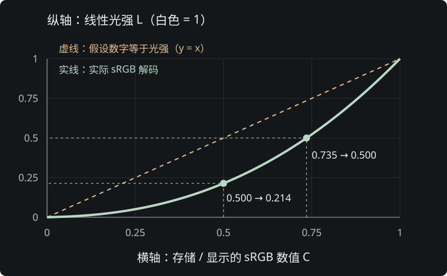

THE LEARNING NOTEBOOK
Unity 中的 Gamma 校正.
从一块 0.5 灰，理解颜色是怎样被算出来、再显示出来的。
在 Unity 里，把 Color Space 从 Gamma 切到 Linear，为什么灯光和材质会变样？要理解它，先分清两件事：图片里存的颜色数字，和计算光照时用的线性数值。
阅读范围：以 Unity 6.0 文档与常见 SDR / sRGB 输出为例。HDR 显示输出另有传递函数；这里的数值不直接套用到 HDR 屏幕。图例是教学计算，不是 Unity 场景截图。
01 / WATCH THE IDEA
先看一遍：颜色的往返旅程
先看“相同数字、不同光强”，再跟着一个灰色像素走过 Unity 的读入、光照和输出。视频可以暂停或跳到指定章节。
展开视频文字版
- 00:00—00:10：sRGB 的 0.5 灰，对应约 21.4% 的相对白色光强；线性的 0.5 才表示 50%。
- 00:10—00:20：同一个目标光强，直接当 sRGB 显示会偏暗。目标为 50% 时，先编码成约 0.735，显示后才对应 50%。
- 00:20—00:30：颜色贴图中的 0.5，经过 sRGB 解码变成约 0.214，交给 Shader 计算。
- 00:30—00:40：假设光照系数为 0.5，线性运算得到 0.107，输出编码约为 0.361。这是一个简化乘法例子。
- 00:40—00:50：项目使用 Linear；sRGB 颜色贴图勾选 sRGB；遮罩等数据贴图关闭 sRGB；法线贴图设置为 Normal map。
- 00:50—01:00：颜色读入先解码，光照在线性空间计算，最后输出时编码。Unity 已经处理的转换，不要再手动重复。
02 / A NUMBER IS NOT LIGHT
0.5 灰，为什么不是一半光强？
把白色的光强定为 1，黑色定为 0。在线性空间里，0.5 就是白色一半的光强；两份 0.25 的光可以相加成 0.5。光照公式需要的就是这种关系。
而常见的 sRGB 图片像一把刻度间距不均匀的尺子：文件里的数字不是光强本身。这样的编码能让有限的存储精度更多地照顾暗部。sRGB 灰色数值为 0.5 时，解码后约为 0.214；要表达线性 0.5，则应编码为约 0.735。[1] [2]
直接当作 sRGB 显示
sRGB 0.500 → 光强 21.4%
先编码，再显示
sRGB 0.735 → 光强 50.0%
目标是 50% 的相对白色光强。直接把线性数值当 sRGB 显示，得到约 21.4%；先编码再显示，得到 50%。


想看公式？先记近似，再看准确版本
便于记忆的近似：解码 L ≈ C^2.2，编码 C ≈ L^(1/2.2)。但 sRGB 不是一条纯粹的 2.2 幂曲线，它在接近黑色处有线性段。本文图例用下面的准确公式。[2]
C = sRGB 编码值，L = 线性值（这里均在 0～1）
解码：C ≤ 0.04045 时，L = C / 12.92
否则 L = ((C + 0.055) / 1.055)^2.4
编码：L ≤ 0.0031308 时，C = 12.92 × L
否则 C = 1.055 × L^(1/2.4) − 0.05503 / THE LINEAR WORKFLOW
Unity：读进来，算清楚，再送出去
在 Linear 工作流中，常见的 sRGB 颜色贴图会在采样时被解码。Shader 拿到线性颜色，进行光照、相加或混合；到 SDR 显示输出时，再按需要编码。中间的 HDR 渲染缓冲可以保留线性值，转换不一定紧跟在每个 Shader 后面。[3]
- 01 / 颜色贴图存着 sRGB0.500表示颜色的编码值
- 02 / 采样解码还原成线性≈ 0.214交给 Shader 的输入
- 03 / 光照运算在线性域相乘× 0.5 ≈ 0.107光强减半
- 04 / 输出编码转回 sRGB≈ 0.361显示后对应 0.107
如果直接对编码值相乘，就会得到 0.5 × 0.5 = 0.25；把它当 sRGB 显示，仅对应约 0.051 的线性光强。这不是原来 0.214 的一半。
切换 Linear，不代表整个画面必定更亮
输入、光照叠加、混合与输出的关系都可能改变。某个简单示例变亮，并不能推出所有场景都变亮。Gamma 模式下调好的灯光和材质，切换后需要重新检查；判断依据应是正确的工作流和预期美术效果。[4]
04 / SET IT UP IN UNITY
实际操作：认准两个设置
- 项目选择计算方式。打开
Edit → Project Settings → Player → Other Settings → Rendering → Color Space，使用Linear建立这篇笔记演示的工作流。具体支持情况取决于渲染管线、平台和图形 API。[5] - 每张贴图说明数据含义。在 Project 中选中贴图，查看 Inspector 的
sRGB (Color Texture)，按下表设置后点击 Apply。它表示 RGB 通道是否作为 sRGB 颜色读取，并不是“让图片好看一点”的开关。[6]
| 贴图内容 | 通常怎么设置 | 为什么 |
|---|---|---|
| Base Color / Albedo 等 sRGB 颜色图 | 勾选 sRGB | 颜色经过编码，采样时应先解码。 |
| Metallic、Roughness / Smoothness、AO、Mask、Height | 关闭 sRGB | 通道表示参数。0.5 应仍是 0.5，不能变成 0.214。 |
| Normal 法线图 | Texture Type 设为 Normal map | 让 Unity 按法线数据处理，不作为普通颜色图读取。 |
| VAT 位置等数值贴图 | 关闭 sRGB | RGB 保存坐标或其他数据，转换会改变原始含义。 |
按内容判断，不按“看起来是不是灰图”判断。灰色的 Albedo 仍然是颜色图；已经在线性空间制作的颜色资源需要按其实际编码导入。sRGB 转换针对 RGB，Alpha 不做同样的 Gamma 转换；打包贴图还要遵循对应 Shader 的通道约定。法线与其他非颜色贴图的默认处理见 Unity API 说明。
两分钟验证：一半白，应该是什么灰？
- 在 Linear 项目的测试场景里，用 Unlit Shader Graph 将两个 Float 常量
0和1接到 Lerp 的 A、B，T 设为0.5，结果连接到颜色输出。 - 把材质放到一个平面上，关闭会改变颜色的后处理，使用普通 SDR 输出。这时输出的是线性
0.5，正常输出链路编码后约为 sRGB0.735（8 位约188）。 - 对照上面的右侧色块理解结果。如果不同，先检查曝光、色调映射、输出目标和是否多做了转换。这里用 Float 常量，是为了让输入数值含义明确。
05 / REMEMBER & DEBUG
遇到颜色不对，先检查数据走了哪条路
- 贴图发白或参数不对：先确认它是颜色还是数据，再查导入设置。数据贴图误勾 sRGB，会让中间值改变。
- 写 Shader 时想补一个 pow：先确认采样是否已解码、输出是否会自动编码。Linear 项目的常规颜色路径通常已经处理；重复解码可能压暗，重复编码可能发灰。不要把
pow(color, 1/2.2)当万能修复。 - 自定义 Blit、RenderTexture 或截图异常：检查缓冲格式、sRGB 标记和读写路径，明确哪一步负责转换。不能仅凭函数名或文件扩展名猜测。RenderTexture.sRGB ↗
- 旧项目切换后不好看：重新检查灯光、材质、后处理；使用烘焙光照时重新烘焙。Gamma 校正解决数值转换，曝光调整整体光量，Tone Mapping 映射动态范围，三者作用不同。[7]
记住这一条就够了
颜色先解码 → 在线性空间算光 → 输出时再编码。
颜色贴图认 sRGB，数据贴图保留数值；Unity 已经做过的转换，不要再重复做。
小自测：一张遮罩贴图里的 0.5，勾选 sRGB 后会怎样？
在 Linear 工作流的 sRGB 采样中，RGB 通道的 0.5 会被解码成约 0.214。如果 Shader 本来希望它表示“50% 权重”，这个参数就错了。应把它当数据贴图导入，关闭 sRGB。
READ FURTHER
资料与延伸阅读
依据 Unity 6.0 文档整理。图例、数值示例与视频为本站原创教学演示；sRGB 数值使用标准分段公式计算。
- Unity · Color spaces in Unity — 线性光强、显示编码与颜色空间。
- W3C · CSS Color 4 / Color conversion code — sRGB 编码、解码公式。
- Unity · Introduction to linear color space — 采样与输出转换的时机。
- Unity · Differences between linear and gamma color space — 灯光和混合的不同表现。
- Unity · Set a project's color space — 项目设置位置。
- Unity · Linear textures；Disable sRGB sampling — 贴图数据的导入方式。
- Unity · Gamma textures in linear color space — 烘焙光照、HDR 和非 HDR 缓冲的处理。